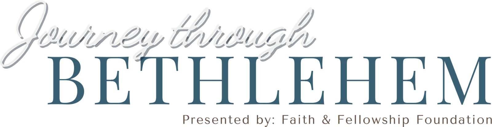

Hero lab · 2026-09-01 · four live treatments
Every frame below is a scrollable mini-site: the hero uses night-sky-clouds-2 with a real headline and no wordmark, and the module beneath it brings in the painting everyone knows with the "Presented by" lockup. Headline copy is a placeholder in the invitation register you asked for. Each frame scrolls on its own; D depends on the scroll.
December 3–6, 2026 · Trophy Club, Texas
at a free community event.
See showtimes
Scroll inside the frame to see the second module.
The quietest of the four and the most like a printed invitation. The comet sky fills the screen, the headline is centered in Playfair with the one word that matters set in candlelight italic, and two strips of painted cloud drift slowly in front of and behind the type at the bottom of the frame. The seam is the point: a band of the same painted cloud straddles the boundary, and as the second module arrives the stable rises up through it while the cloud thins, so the sky hands the painting over rather than stopping. The wordmark lockup follows a beat later, sitting where the flyer puts it.
The 3rd annual live nativity · Trophy Club, Texas
Four December nights. A town rebuilt by neighbors. A star to follow.
See showtimesScroll inside the frame to see the second module.
Left-aligned and cinematic. The comet's own tail is the beam: the sky is positioned so the streak points straight at the headline, and the word "Christ" is set in a gradient that reads as if that light is catching it. No synthetic beam is drawn on the hero. The composition is asymmetric, which gives the headline room to be a full sentence and leaves the upper right of the sky open and quiet. The seam continues the idea: as the second module arrives, the same beam of starlight carries on downward across the boundary and lands on the manger, which begins to glow. The star that lit the words now lights the child.
December 3–6, 2026 · Trophy Club, Texas
at a free community event.
See showtimesReplay to watch the sky get painted; scroll inside the frame for the second module.
A first-visit moment. The frame opens as bare night and the comet sky is brushed on in eight broad, roughened strokes over about two and a half seconds; then the headline rises. The seam keeps the metaphor honest: when the second module scrolls into view, the same eight brushstrokes paint the stable onto the night, so the whole page reads as one canvas being painted while you watch. Played once per session, it is a memory rather than a delay.
December 3–6, 2026 · Trophy Club, Texas
at a free community event.
See showtimesScroll
Scroll inside the frame. In Chrome and Edge the stable climbs with your scroll; elsewhere it appears on the next screen.
The two images become one motion. The sky is pinned; as you scroll, the stable painting rises up through the drifting clouds with a brushed top edge and the headline dissolves above it, so the star literally gives way to the manger. The wordmark lockup arrives with the painting. It is the single most "this is the Journey" idea of the four, and the one that makes the two images feel chosen for each other.
B for the site, C as its first-visit opening, D held for later. B gives the headline the room a real sentence needs, uses the comet star as a light source rather than decoration, and hands the painting a full-width module of its own with the wordmark where the flyer puts it. C costs nothing after load and makes the first visit memorable. D is the most ambitious and the most beautiful in Chrome, but until Safari supports scroll timelines it is a different experience for a large share of iPhone visitors, so it is a strong candidate for next year or for a Chrome-heavy audience.
index.astro: sky hero with headline, then the painting + lockup module, then the invitation module.sessionStorage so it plays once.